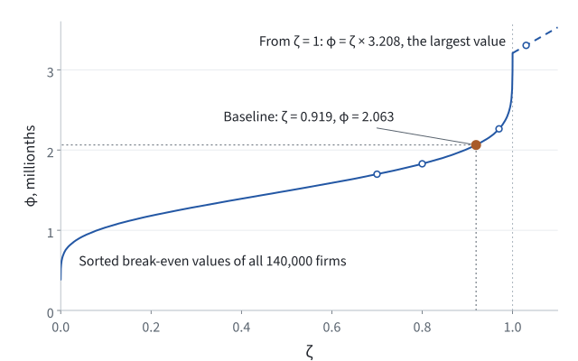

Unit 02 · Three short lessons
Inside one economy
Three short lessons connect the firm's operating decision to the moments of an economy.
The economy is based on De Loecker, Eeckhout and Mongey (2026), with teaching examples and an independent Python implementation.
- Given
- A parameter vector (σ, N, ζ), fixed technology and demand parameters, and fixed productivity draws for two periods of a stationary economy in 10,000 markets. σ is the dispersion of productivity, each market starts with M = floor(N) potential firms, and ζ sets the fixed labor φ of every operating firm (how ζ picks φ).
- Find
- The operating firms in each period; their shares, prices, production and employment; the wage and output that clear the economy; then three moments of those outcomes.
- Check
- Each lesson ends with the numbers you should find, folded under “Check your result”. A Python script solves the economy of 02.3 again and compares every number with this page.
- 02.1Entry and exitStart with potential firms. Follow the operating set through the profit checks, then compare entry and exit across periods.
- 02.2Cournot and equilibriumFor a given operating set, connect competition, prices, demand and the labor market.
- 02.3Parameters to momentsChange one input and follow firms’ outcomes into three aggregate moments.
Reference
- Model and sourceHow the model fits together, the fixed-cost rule, and the downloads.
02.1 / Entry and exit
Which firms operate?
Start with potential firms and follow their operating decisions.
- Inspect. In Period 1, read a firm's profit and decision in Round 1. Press Next and check which firms are still present.
- Follow. Go to the last round. Record proposed exits and applied exits for the whole economy. Use the stopping rule below to explain the difference.
- Compare. Open “Between two periods”. Pick an entrant, an exiting firm or a continuing firm and record its two operating states. These states determine which employment changes enter the reallocation moment.
Check your result
- Period 1, Round 1. The whole-economy exit cutoff is −0.810 millionths. Five firms in Market 1 are at or below it and leave before the next round: Firms 01, 04, 07, 10 and 14. Firm 01, for example, has profit −0.989 and a 4.74% share; in Round 2 it is “Already inactive”. All fourteen firms make a loss in this round, but the other nine are above the cutoff and stay for the next solve.
- Round 15, the last. Exit candidates in the whole economy: 2. Exit decisions applied: 0. Fewer than three exits are proposed, so the stopping check keeps the current set, and Market 1 ends Period 1 with nine operating firms.
- Between two periods. In Market 4, Firm 01 exits (9.07% in Period 1, 0 in Period 2) and Firm 02 enters (0, then 9.50%): all of Firm 01’s employment counts as job destruction and all of Firm 02’s as job creation. Eight firms continue, such as Firm 03 (10.24%, then 10.53%), and their employment can rise or fall; four firms are inactive in both periods. Firm 01’s productivity rises 0.8%, but Firm 02’s rises 7.6% and passes it: in both periods the nine most productive firms in Market 4 operate. The whole economy has 10,153 entrants, 10,124 exiting firms and 74,432 continuing firms.
Loading the saved operating-set decisions…
One market, round by round
Each frame is a saved equilibrium, just before its exit decision.
The saved round will appear here.
Before deletion. Only firms labelled “Leaves before next round” exit at the next step.
Whole-economy exit cutoff: millionths of a model profit unit, rounded for display. Across all 10,000 markets, operating firms at or below this cutoff form the proposed exit batch; other loss-making firms stay for the next solve. If fewer than three exits are proposed economy-wide, stop before deletion and keep the current set.
- Wage W
- —
- Output Y
- —
- Operating · whole economy
- —
- Exit candidates · whole economy
- —
- Exit decisions applied · whole economy
- —
How to read the decision
Begin with potential firms. The operating decision comes first; the next lesson opens up Cournot competition for a given set of firms.
- Start with potential firms.
- Solve the current operating set and read profits.
- Apply the exit decision and solve the remaining set again.
The displayed market belongs to the full economy. The exit rule is evaluated across that economy.
This replay holds φ at 2.064 per million. In lesson 02.3, ζ picks φ for the same parameters (2.063 per million), so the totals there differ slightly from these.
Shares and profits belong to the current operating set. A firm marked “Leaves before next round” is still present in this frame; the next round shows the new set. Profit is displayed in millionths of a model unit.
Each round first solves shares, prices and wages for its current operating set. The full-economy profit rule then selects an exit batch. Some loss-making firms can remain for the next round.
The stopping check comes before deletion: on a stopping round, the proposed exits are not applied.
Compare the two final operating sets in “Between two periods” to see entrants and exiting firms.
Who enters or exits between periods?
Compare the final operating sets from the two separately solved periods.
An entrant operates only in period 2; an exiting firm operates only in period 1. Continuing firms operate in both. Each bar shows a firm’s final market share.
Period 2 starts its own operating-set calculation from the potential firms. A firm absent from period 1 can therefore operate in period 2.
The economy is stationary. Period 1’s log productivity is drawn from the stationary distribution of an AR(1) process with persistence ρ = 0.9. Period 2 takes one step of that process: each firm keeps 0.9 of its log productivity and adds a new shock, and a small drift keeps mean productivity at 1. Every firm’s productivity changes, but the distribution across firms is the same in both periods, and so is φ.
So the two periods have almost the same totals: 84,556 and 84,585 operating firms, and fixed labor is 24.2% of employment in both. In “Within a period”, switch the replay from Period 1 to Period 2: in every round the whole economy has almost the same number of operating firms, 96,925 and 96,932 in Round 2. What changes is which firms operate and how large they are. Across the economy, 10,124 firms exit and 10,153 enter; in Market 4, Firm 02 overtakes Firm 01. These changes make up employment reallocation, the first of the three moments in 02.3.
60-second worked example · EnglishFrom potential firms to operating firms
Follow fourteen potential firms through the first-round profit check. Five leave, nine remain, and the whole economy continues to adjust before its final stopping check.
Code on GitHub model/ ↗
02.2 / Cournot and equilibrium
Now solve the operating firms' economy.
Take the current operating set as given. Cournot competition, demand and the labor market jointly determine shares, prices, output and wages.
- Trace the share loop. Select Competition, then Demand. A trial share gives elasticity and markup; the implied prices give a new demand share. The two shares must agree.
- Close the labor market. Follow Firms → Labor → Households. Add production and operating labor across active firms and compare that demand with labor supplied at wage W.
- Return to profits. With quantities and prices solved, calculate profits for the exit decision in 02.1. If the operating set changes, solve these conditions again.
The two conditions to write down
εij = 1 / [sij/θ + (1 − sij)/η], μij = εij / (εij − 1).
The price-implied market share must return the same sij. This is the share fixed point.
Σactive i,j (nij + φ) = φ̄ Wϕ.
The left side is labor used; the right side is household labor supplied. The labor-supply scale φ̄ and elasticity ϕ are fixed parameters; φ is the fixed labor that each operating firm uses.
Check your result
- The two conditions are the ones under “The two conditions to write down”: the share fixed point and labor market clearing.
- The arrows. Shares → elasticities and markups → prices → demand → implied shares, which must equal the trial shares. Then output Y and wage W → production labor; production labor plus the fixed labor of the operating firms must equal the labor households supply at W. Profits follow, and they feed the exit decision of 02.1.
- The saved checks, baseline economy. Shares: in Market 1’s first exit round, Firm 3’s share moves from 8.1% to 10.0% in 41 updates, and then prices and shares agree. Labor: of every 100 employed workers, 75.8 produce and 24.2 cover fixed operations, and employment equals labor supplied. The split is the same in both periods because the economy is stationary.
Everything has to fit.
Click a part, or follow the arrows below.
Households supply labor.
A higher wage raises labor supplied.
48-second explanation · EnglishHow the parts of one economy fit together
Follow labor, production, competition and demand through the connected economy.
Code on GitHub model/ ↗
02.3 / Parameters to moments
Change an input. Trace the result.
Follow one parameter change through the operating set and the equilibrium into three moments.
- Start with one case. Keep the default middle point. Record σ, N, M, ζ, the seed and φ. This is one evaluation, not an estimate.
- Inspect the solution. Use Operating firms → Shares → Labor below. Record the operating count and the share and labor checks. Then choose Moments to open the firm-to-economy calculations.
- Make one comparison. Move one point along the σ path and repeat the same table. Keep ζ and the seed fixed. φ changes too, because ζ picks it again from the new economy’s firms.
Check your result
The baseline is the middle point of the σ path, σ = 0.047041; the next point raises σ to 0.054500. N = 14.2227 (M = 14), ζ = 0.919212 and seed 100 stay the same.
| Saved result | Baseline | Next σ point |
|---|---|---|
| φ, millionths | 2.063 | 2.144 |
| Operating firms per market, Period 1 | 8.46 | 8.02 |
| E₁ | 0.720623555 | 0.722964449 |
| E₂ | 0.720561260 | 0.722900565 |
| JC | 0.103149660 | 0.109662963 |
| JD | 0.103211955 | 0.109726847 |
| Employment reallocation | 28.638% | 30.347% |
| Sales-weighted markup | 1.4501 | 1.4611 |
| SGA / total cost | 20.499% | 20.098% |
Firm 02 of Market 1, baseline: employment falls from 7.320678 to 7.204523 millionths, a change of −0.116154 that enters job destruction. Its first-period sales weight is 0.000936% of economy sales. At the next σ point, Firm 02 operates in Period 1 only.
- Dispersion σ
- —
- Potential firms N
- — M = floor(N)
- Fixed-cost control ζ
- —
- Draw seed
- —
Fixed labor per operating firm · φ
—In millionths of a model labor unit.
How ζ picks φ. The solver uses ζ once, in the first round of period 1, when all M potential firms operate in every market. For each of these K = 10,000 × M firms it computes a break-even value Γ: about the fixed labor at which that firm’s profit would be zero if every firm had that fixed labor. Then
φ = Γ(⌈ζK⌉) if ζ < 1,
φ = ζ × maxk Γk if ζ ≥ 1,
where Γ(r) is the r-th smallest value and ⌈ζK⌉ is ζK rounded up. For ζ < 1, about a share ζ of the firms have break-even values below φ and make a loss in that first round. For ζ ≥ 1, every firm makes a loss in that round. φ then stays the same in every exit round and in period 2.

At the baseline, K = 140,000 and ζ = 0.919212, so ζK = 128,689.68 and φ is the 128,690th smallest break-even value: 2.063 millionths. About 92% of the firms make a loss in the first round; in Market 1, all fourteen do.
To move ζ alone, choose “Fixed-cost control” under “Change one input”. φ goes from 1.699 millionths at ζ = 0.70 to 2.264 at ζ = 0.97 and 3.304 at ζ = 1.03. The last step is large because the curve is steep at the top: the top 3% of break-even values run from 2.264 to the largest, 3.208, and past ζ = 1, φ grows in proportion to ζ, to 1.03 × 3.208 = 3.304.
Why ζ can exceed 1. The break-even values are measured before any firm exits, when all M potential firms compete in every market. Exit raises the profits of the firms that stay: they have fewer rivals, larger shares and higher markups. So they can cover a fixed labor above every firm’s first-round break-even value, and a ζ above 1 still gives an economy with operating firms. At ζ = 1.03, every firm makes a loss in the first round, yet 5.66 firms per market operate at the end of period 1. Unit 03 selects ζ above 1 in 11 of the 44 years (1986–1995 and 2002).
Why ζ and not φ. The break-even values depend on σ, N and the draws, so the same φ means different things in different economies. Hold φ at the baseline’s 2.063 and change only N: at N = 10, 37% of the firms have break-even values below it; at N = 18, 99.8% do. A fixed ζ keeps that share at about ζ and lets φ adjust instead, from 3.007 at N = 10 to 1.562 at N = 18. So ζ means the same in every economy, and one search range for ζ serves every candidate in every year. In unit 03’s estimates, 1981 and 2021 have almost the same ζ, 0.762 and 0.721, but φ is 0.381 millionths in 1981, with 59 potential firms per market, and 4.29 in 2021, with 7.
84-second worked example · EnglishFrom productivity dispersion to three moments
Compare two saved economies with the same shocks and the same ζ. Follow fourteen firms in one market, then read three moments for the full economy.
Inputs
A parameter vector and fixed draws define one economy.
Loading the computed economy…
- Employment reallocation
- —
- Sales-weighted markup
- —
- SGA / total cost
- —
Fixed operating labor φ creates a wage bill Wφ. The model converts this to SGA costs using its labor-share parameter: SGA = Wφ / ψSGA. The reported moment averages each operating firm’s SGA / total cost ratio using first-period sales weights.
Build the three moments
Firm rows below come from Market 1. The totals always cover all 10,000 markets. Use the same firm through employment and sales, then add its contribution to the rest of the economy.
Loading the saved firm outcomes…
First calculate employment. In each period, an operating firm employs production labor plus fixed operating labor. An inactive firm has zero employment.
eijt = nijt + φ if active; otherwise 0.
Δeij = eij2 − eij1.
Selected firm · labor quantities in millionths of a model labor unit.
| Period | Production n | Operating φ | Employment e |
|---|
Then sum the changes. Add positive changes to job creation (JC); add the absolute value of negative changes to job destruction (JD). Entrants start at zero; exiting firms end at zero. Continuing firms can contribute to either flow.
JC = Σi,j max(Δeij, 0), JD = Σi,j max(−Δeij, 0).
REALL = (JC + JD) / [½(E₁ + E₂)], Et = Σi,j eijt.
Whole economy · labor quantities in model units. Check that JC − JD equals E₂ − E₁.
Use period 1. For every operating firm, calculate sales, a share of economy-wide sales, and a share of its own total cost. Period 2 employment is used for reallocation; it does not enter these two weighted moments.
Salesij = pijyij, wij = Salesij / Σi,j Salesij.
SGAij = Wφ / ψSGA if active; otherwise 0.
TCij = [γ/αCOGS] Wnij/ψCOGS + SGAij.
The first term in TC includes variable inputs and capital. Here γ = 1.0252, αCOGS = 0.8365, and ψCOGS = ψSGA = 0.33.
Check the denominator: w is a firm's share of sales across the whole economy. It is not the within-market share s from the Cournot calculation. An inactive firm in period 1 has weight zero.
Add like contributions across firms. Reallocation sums absolute employment changes over average total employment. The other two moments multiply each first-period firm statistic by its economy-wide sales weight.
μ̄ = Σactive i,j wij μij.
SGA / TC moment = Σactive i,j wij (SGAij / TCij).
| Moment | Market 1 | Other 9,999 markets | All 10,000 markets |
|---|
Table entries are levels, not percentages. Market 1 + other markets = the whole-economy moment; multiply reallocation and the SGA share by 100 to match the percentage readouts above. The SGA moment averages firm cost shares with sales weights; dividing total SGA by total costs gives a different statistic.
For estimation, the model and the data must define the periods, employment, sales weights and costs the same way. Unit 03 compares these three simulated moments with each year’s targets.
Where these intermediate values come from
These values come from the same saved economies as the gallery. Firm employment, markups, profits and the economy totals were saved when each economy was solved. Sales are saved profit plus total cost, checked against the saved markup and production labor; economy sales equal PY, with P = 1.
JC and JD come from the saved total absolute employment change and the two employment totals, using JC + JD = Σ|Δe| and JC − JD = E₂ − E₁. “Other 9,999 markets” is the saved whole-economy moment minus Market 1's contribution. All calculations use full precision; only the display is rounded.
Solve it yourselfTry it yourself
Solve this economy on your computer.
Download the Python source, unpack it, and run this command in the unpacked folder or at the root of the course repository. It needs Python 3.10 or later with NumPy and SciPy, and takes about ten seconds.
python lessons/02_one_economy/parameters_to_moments.pyThe script solves the baseline economy with the page’s random draws. It prints what this page shows for it: φ, the operating firms, the three moments, the employment totals, Firm 02 of Market 1 and Market 1’s contributions. Next to each line it says whether the page shows the same value. Add --case sigma_3 for the next point on the σ path, or --firm 3 for another firm.
Check your result
All 25 lines should say “same”, and the output should end like this:
25 of 25 lines match the page.
At full precision the three moments differ from the saved values by at most 0, and 17 other saved values by at most 4.04e-16 relative.The moments are 28.638%, 1.4501 and 20.499%, as in the readouts above; with --case sigma_3 they are 30.347%, 1.4611 and 20.098%. On another computer the full-precision differences can be a little larger, but they stay below about 10−15. The 17 other values can differ in the last digit even here, because the page built job creation, job destruction and sales from other saved totals.
The page draws productivity for 18 potential firms per market and keeps the first M, so that adding potential firms keeps the others’ draws. Unit 03 draws exactly M firms per market, so its candidate 2, which has the same parameters as this baseline, gives slightly different numbers.
Code on GitHub lessons/ ↗ · model/ ↗ · model/ ↗ · model/ ↗ · model/ ↗
Unit 02 / Reference
Model, interpretation and source
The model in four lines, and the downloads.
Model & interpretation
- Shares ↔ prices. Shares set elasticities and markups; prices imply new demand shares.
- Labor clears. Production and fixed labor together equal household labor supplied.
- Exit repeats. The sequential rule removes firms and solves the economy again. It does not test profitable re-entry, so it does not certify a Nash equilibrium.
- Fixed cost from ζ. Before any firm exits in period 1, ζ picks φ, the fixed labor of each operating firm, from the firms’ break-even values. φ then stays the same in every exit round and in period 2. 02.3 gives the rule with the baseline’s numbers.